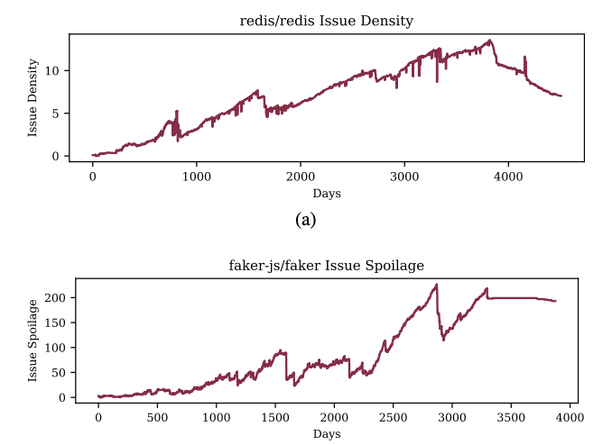

<tr onmouseout="None_stop()" onmouseover="None_start()">
<td class="demo">
<div class="one">
<div class="two" id="None">

</div>

</div>
<script>
function None_start() { document.getElementById("None_before").style.opacity = "1"; }
function None_stop() { document.getElementById("None_before").style.opacity = "0"; }
None_stop()
</script>
</td>
<td style="padding:20px;width:75%;vertical-align:middle">
<em><span class="title">An Empirical Study of Artifacts and Security Risks in the Pretrained Model Supply Chain</span></em>
<br>
<a href="https://wenxin-jiang.github.io/"> Wenxin Jiang </a>
<a href="https://nicholassynovic.github.io/"> Nicholas Synovic </a>
Rohan Sethi
Aryan Indarapu
<a href="https://mhyatt000.github.io/"> <em>Matt Hyatt</em> </a>
Taylor R. Schorlemmer
<a href="https://gkt.cs.luc.edu/"> George K.  Thiruvathukal </a>
<a href="https://davisjam.github.io/"> James C. Davis </a>
<br>
<em>ACM SCORED</em>, 2022
<br>
project page
 // 
arxiv

</td>
</tr>
<tr onmouseout="prime_stop()" onmouseover="prime_start()">
<td class="demo">
<div class="one">
<div class="two" id="prime">

</div>

</div>
<script>
function prime_start() { document.getElementById("prime_before").style.opacity = "1"; }
function prime_stop() { document.getElementById("prime_before").style.opacity = "0"; }
prime_stop()
</script>
</td>
<td style="padding:20px;width:75%;vertical-align:middle">
<em><span class="title">Snapshot Metrics Are Not Enough: Analyzing Software Repositories with Longitudinal Metrics</span></em>
<br>
<a href="https://nicholassynovic.github.io/"> Nicholas Synovic </a>
<a href="https://mhyatt000.github.io/"> <em>Matt Hyatt</em> </a>
Rohan Sethi
Sohini Thota
Shilpika
Allan J. Miller
<a href="https://wenxin-jiang.github.io/"> Wenxin Jiang </a>
Emmanuel S. Amobi
Austin Pinderski
Konstantin Läufer
Nicholas J. Hayward
<a href="https://neilklingensmith.com/"> Neil Klingensmith </a>
<a href="https://davisjam.github.io/"> James C. Davis </a>
<a href="https://gkt.cs.luc.edu/"> George K. Thiruvathukal </a>
<br>
<em>ASE Tools Demo</em>, 2022
<br>
project page
 // 
<a href="https://arxiv.org/abs/2207.11767"> arxiv </a>

</td>
</tr>